# load required library
library(tidyverse)
library(colorspace)
temperatures <- read_csv("https://wilkelab.org/SDS375/datasets/tempnormals.csv") %>%
mutate(
location = factor(
location, levels = c("Death Valley", "Houston", "San Diego", "Chicago")
)
) %>%
select(location, day_of_year, month, temperature)
temps_months <- read_csv("https://wilkelab.org/SDS375/datasets/tempnormals.csv") %>%
group_by(location, month_name) %>%
summarize(mean = mean(temperature)) %>%
mutate(
month = factor(
month_name,
levels = c("Jan", "Feb", "Mar", "Apr", "May", "Jun", "Jul", "Aug", "Sep", "Oct", "Nov", "Dec")
),
location = factor(
location, levels = c("Death Valley", "Houston", "San Diego", "Chicago")
)
) %>%
select(-month_name)Color Scales Exercise Solutions
Coding exercise 7.1
In this worksheet, we will discuss how to change and customize color scales.
We will be using the R package tidyverse, which includes ggplot() and related functions. We will also be using the R package colorspace for the scale functions it provides.
We will be working with the dataset temperatures that we have used in previous worksheets. This dataset contains the average temperature for each day of the year for four different locations.
temperatures# A tibble: 1,464 × 4
location day_of_year month temperature
<fct> <dbl> <chr> <dbl>
1 Death Valley 1 01 51
2 Death Valley 2 01 51.2
3 Death Valley 3 01 51.3
4 Death Valley 4 01 51.4
5 Death Valley 5 01 51.6
6 Death Valley 6 01 51.7
7 Death Valley 7 01 51.9
8 Death Valley 8 01 52
9 Death Valley 9 01 52.2
10 Death Valley 10 01 52.3
# ℹ 1,454 more rowsWe will also be working with an aggregated version of this dataset called temps_months, which contains the mean temperature for each month for the same locations.
temps_months# A tibble: 48 × 3
# Groups: location [4]
location mean month
<fct> <dbl> <fct>
1 Chicago 50.4 Apr
2 Chicago 74.1 Aug
3 Chicago 29 Dec
4 Chicago 28.9 Feb
5 Chicago 24.8 Jan
6 Chicago 75.8 Jul
7 Chicago 71.0 Jun
8 Chicago 38.8 Mar
9 Chicago 60.9 May
10 Chicago 41.6 Nov
# ℹ 38 more rowsAs a challenge, try to create this above table yourself using group_by() and summarize() like we learned about Wednesday., and then make a month column which is a factor with levels froing from “Jan” to “Dec”, and make the location column a factor with levels “Death Valley”, “Houston”, “San Diego”, “Chicago”. If you are having trouble, the solution is at the end of this page, make sure you copy it into your code so the rest of the exercise works.
# check solution at the end before moving on!
temps_months <- read_csv("https://wilkelab.org/SDS375/datasets/tempnormals.csv") %>%
group_by(___) %>%
summarize(___) %>%
mutate(
month = factor(
month_name,
___
),
location = factor(
location, ___
)
) %>%
select(-month_name)# solution
temps_months <- read_csv("https://wilkelab.org/SDS375/datasets/tempnormals.csv") %>%
group_by(location, month_name) %>%
summarize(mean = mean(temperature)) %>%
mutate(
month = factor(
month_name,
levels = c("Jan", "Feb", "Mar", "Apr", "May", "Jun", "Jul", "Aug", "Sep", "Oct", "Nov", "Dec")
),
location = factor(
location, levels = c("Death Valley", "Houston", "San Diego", "Chicago")
)
) %>%
select(-month_name)Built in ggplot2 color scales
We will start with built-in ggplot2 color scales, which require no additional packages. The scale functions are always named scale_color_*() or scale_fill_*(), depending on whether they apply to the color or fill aesthetic. The * indicates some other words specifying the type of the scale, for example scale_color_brewer() or scale_color_distiller() for discrete or continuous scales from the ColorBrewer project, respectively. You can find all available built-in scales here: https://ggplot2.tidyverse.org/reference/index.html#section-scales
Now consider the following plot.
ggplot(temps_months, aes(x = month, y = location, fill = mean)) +
geom_tile() +
coord_fixed(expand = FALSE)
If you wanted to change the color scale to one from the ColorBrewer project, which scale function would you have to add? scale_color_brewer(), scale_color_distiller(), scale_fill_brewer(), scale_fill_distiller()?
# answer the question above to yourself
#solution:
scale_fill_distiller()Now try this out.
ggplot(temps_months, aes(x = month, y = location, fill = mean)) +
geom_tile() +
coord_fixed(expand = FALSE) +
___ # solution
ggplot(temps_months, aes(x = month, y = location, fill = mean)) +
geom_tile() +
coord_fixed(expand = FALSE) +
scale_fill_distiller()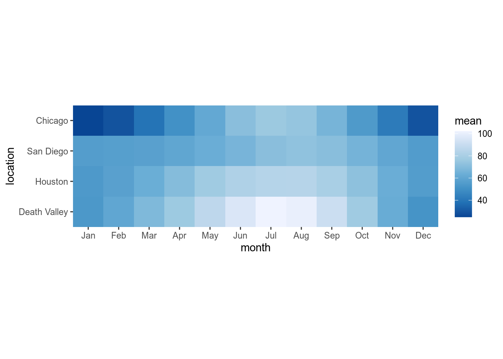
Most color scale functions have additional customizations. How to use them depends on the specific scale function. For the ColorBrewer scales you can set direction = 1 or direction = -1 to set the direction of the scale (light to dark or dark to light). You can also set the palette via a numeric argument, e.g. palette = 1, palette = 2, palette = 3 etc.
Try this out by setting the direction of the scale from light to dark and using palette #4.
# build all the code for this exercise
# solution
ggplot(temps_months, aes(x = month, y = location, fill = mean)) +
geom_tile() +
coord_fixed(expand = FALSE) +
scale_fill_distiller(direction = 1, palette = 4)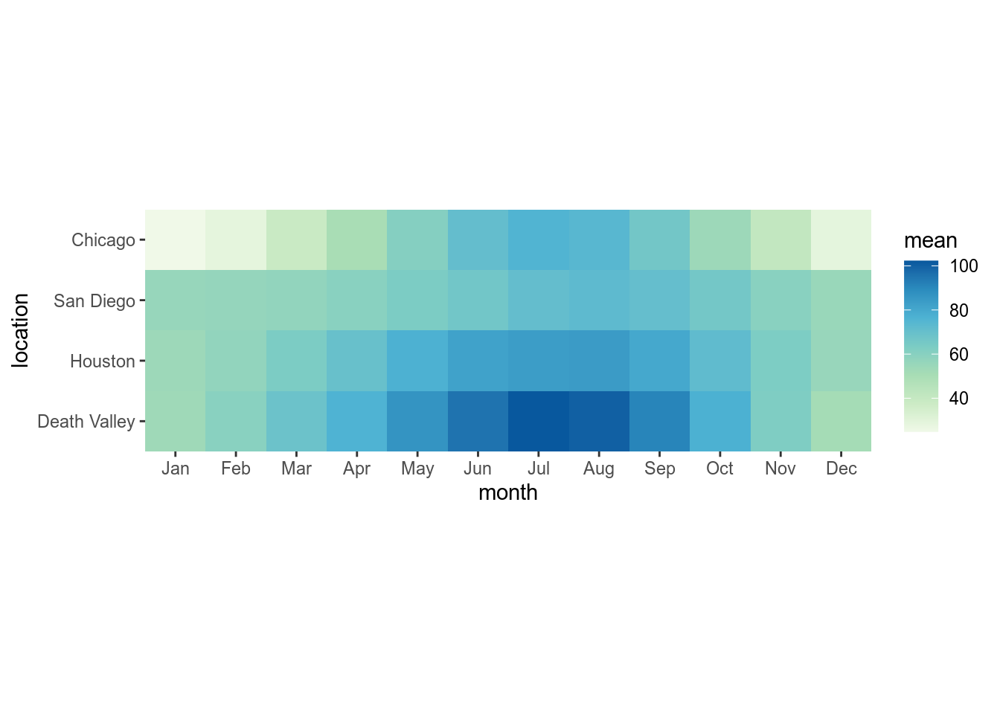
A popular set of scales are the viridis scales, which are provided by scale_*_viridis_c() for continuous data and scale_*_viridis_d() for discrete data. Change the above plot to use a viridis scale.
# build all the code for this exercise
# solution
ggplot(temps_months, aes(x = month, y = location, fill = mean)) +
geom_tile() +
coord_fixed(expand = FALSE) +
scale_fill_viridis_c()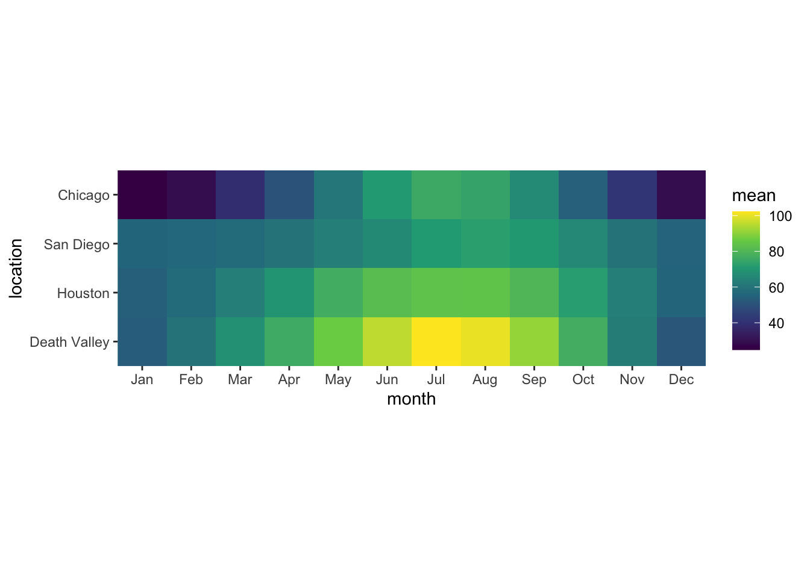
The viridis scales can be customized with direction (as before), option (which can be "A", "B", "C", "D", or "E"), and begin and end which are numerical values between 0 and 1 indicating where in the color scale the data should begin or end. For example, begin = 0.2 means that the lowest data value is mapped to the 20th percentile in the scale.
Try different choices for option, begin, and end to see how they change the plot.
# build all the code for this exercise
# solution
ggplot(temps_months, aes(x = month, y = location, fill = mean)) +
geom_tile() +
coord_fixed(expand = FALSE) +
scale_fill_viridis_c(option = "B", begin = 0.15)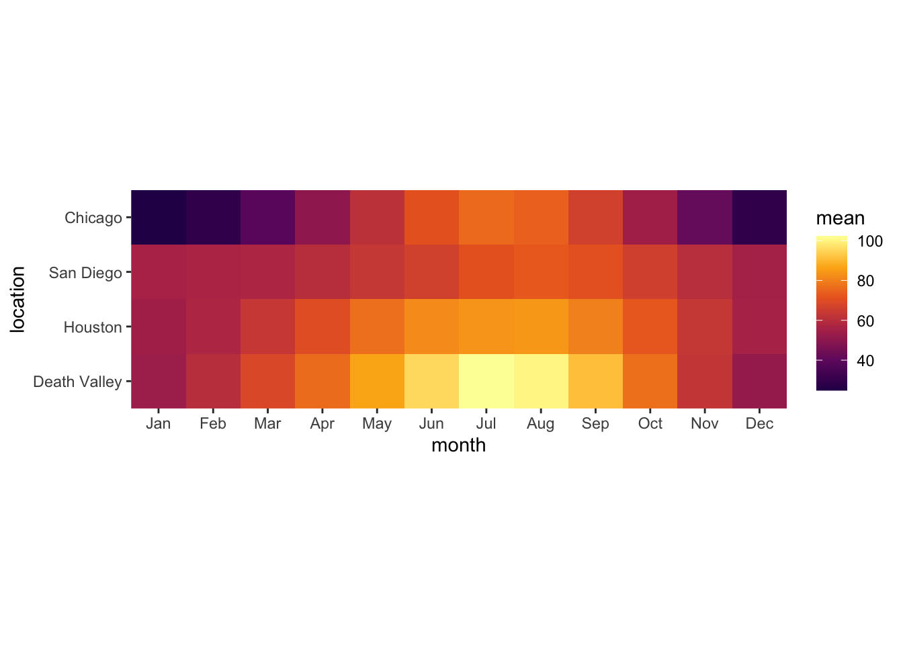
Customizing scale title and labels
In a previous worksheet, we used arguments such as name, breaks, labels, and limits to customize the axis. For color scales, instead of an axis we have a legend, and we can use the same arguments inside the scale function to customize how the legend looks.
Try this out. Set the scale limits from 10 to 110 and set the name of the scale and the breaks as you wish.
ggplot(temps_months, aes(x = month, y = location, fill = mean)) +
geom_tile() +
coord_fixed(expand = FALSE) +
scale_fill_viridis_c(
name = ___,
breaks = ___,
limits = ___
)# solution
ggplot(temps_months, aes(x = month, y = location, fill = mean)) +
geom_tile() +
coord_fixed(expand = FALSE) +
scale_fill_viridis_c(
name = "temperature (F)",
breaks = c(25, 50, 75, 100),
limits = c(10, 110)
)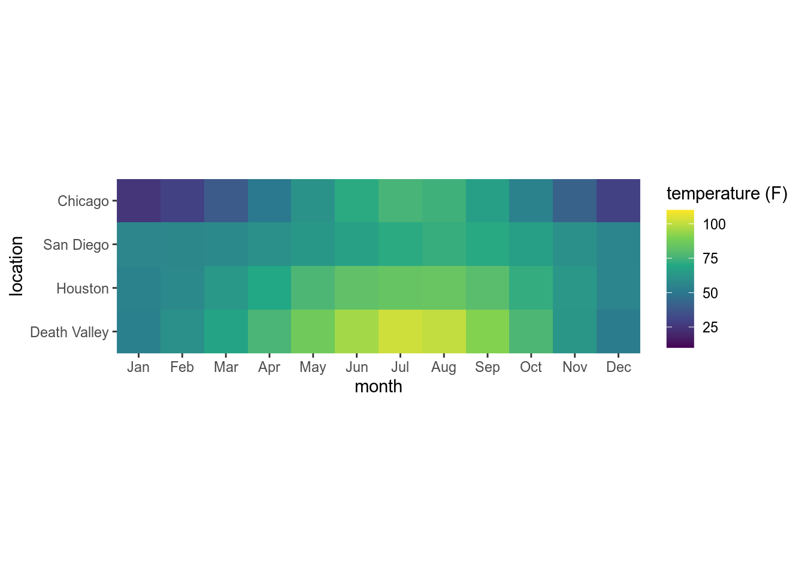
Note: Color scales ignore the expand argument, so you cannot use it to expand the scale beyond the data values as you can for position scales.
Binned scales
Research into human perception has shown that continuous coloring can be difficult to interpret. Therefore, it is often preferable to use a small number of discrete colors to indicate ranges of data values. You can do this in ggplot with binned scales. For example, scale_fill_viridis_b() provides a binned version of the viridis scale. Try this out.
ggplot(temps_months, aes(x = month, y = location, fill = mean)) +
geom_tile() +
coord_fixed(expand = FALSE) +
___# solution
ggplot(temps_months, aes(x = month, y = location, fill = mean)) +
geom_tile() +
coord_fixed(expand = FALSE) +
scale_fill_viridis_b()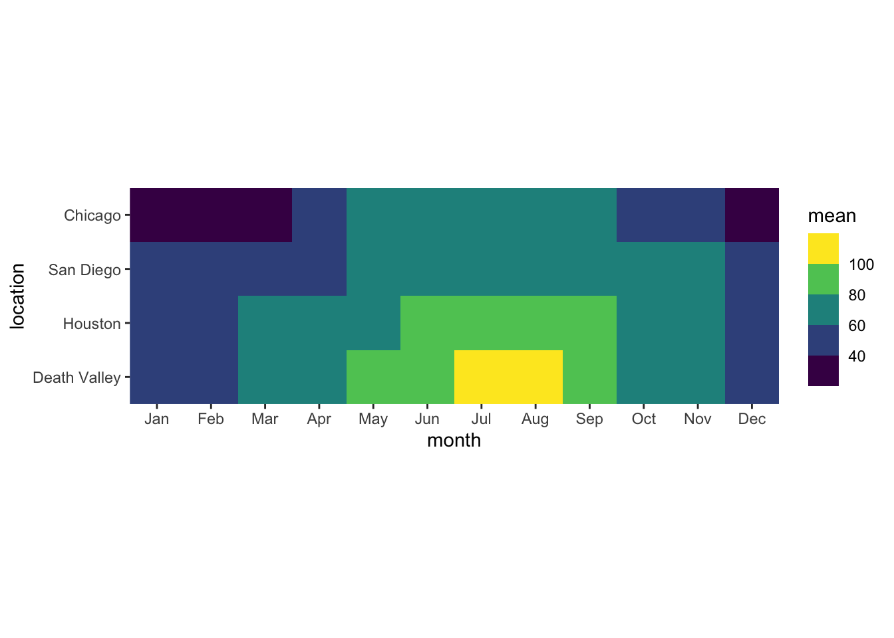
You can change the number of bins by providing the n.breaks argument or alternatively by setting breaks explicitly. Try this out.
# build all the code for this exercise
# solution
ggplot(temps_months, aes(x = month, y = location, fill = mean)) +
geom_tile() +
coord_fixed(expand = FALSE) +
scale_fill_viridis_b(
n.breaks = 7
)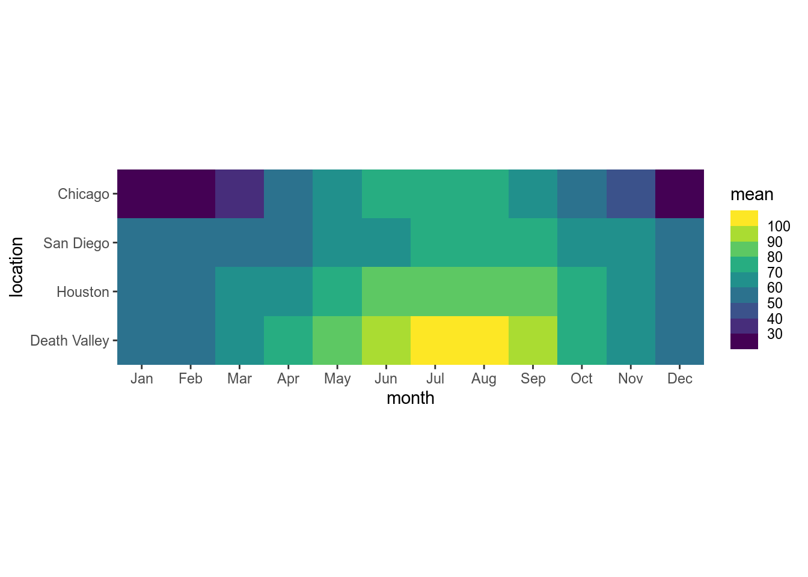
Scales from the colorspace package
The color scales provided by the colorspace package follow a simple naming scheme of the form scale_<aesthetic>_<datatype>_<colorscale>(), where <aesthetic> is the name of the aesthetic (fill, color, colour), <datatype> indicates the type of variable plotted (discrete, continuous, binned), and colorscale stands for the type of the color scale (qualitative, sequential, diverging, divergingx).
For the mean temperature plot we have been using throughout this worksheet, which 2 color scales from the colorspace package is/are appropriate?
scale_fill_binned_sequential(), scale_fill_discrete_qualitative(), scale_fill_continuous_sequential(), scale_color_continuous_sequential(), scale_color_continuous_diverging()>
ggplot(temps_months, aes(x = month, y = location, fill = mean)) +
geom_tile() +
coord_fixed(expand = FALSE) +
___ # solution
ggplot(temps_months, aes(x = month, y = location, fill = mean)) +
geom_tile() +
coord_fixed(expand = FALSE) +
scale_fill_continuous_sequential()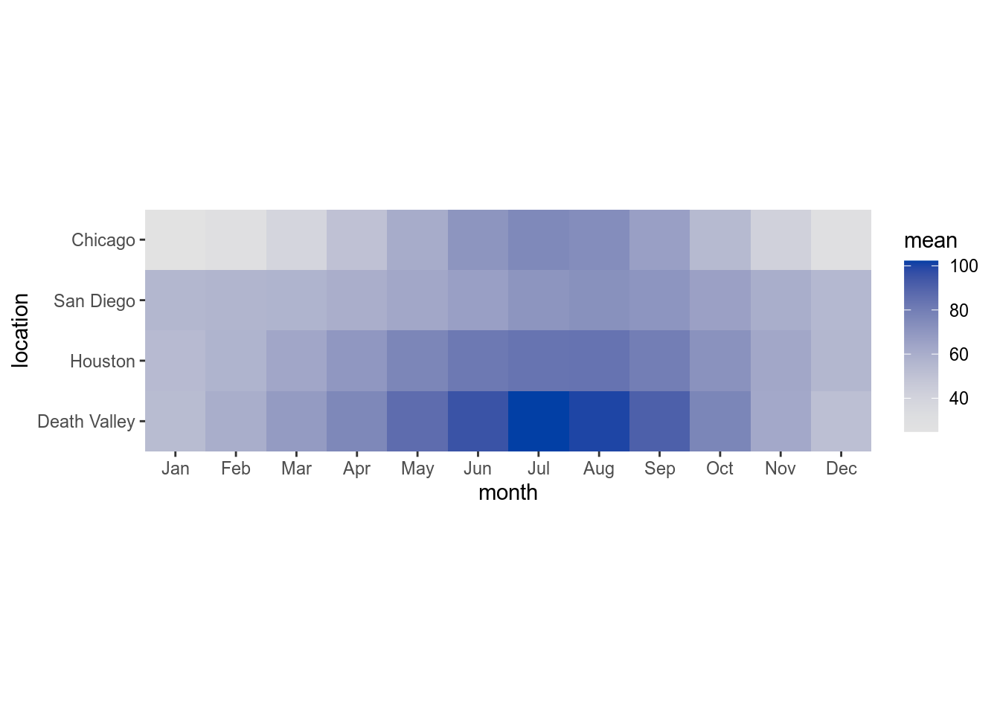
You can customize the colorspace scales with the palette argument, which takes the name of a palette (e.g., "Inferno", "BluYl", "Lajolla"). Try this out. Also try reversing the scale direction with rev = TRUE or rev = FALSE. (The colorspace scales use rev instead of direction.) You can find the names of all supported scales here (consider specifically single-hue and multi-hue sequential palettes).
# build all the code for this exercise
# solution
ggplot(temps_months, aes(x = month, y = location, fill = mean)) +
geom_tile() +
coord_fixed(expand = FALSE) +
scale_fill_continuous_sequential(
palette = "Lajolla"
)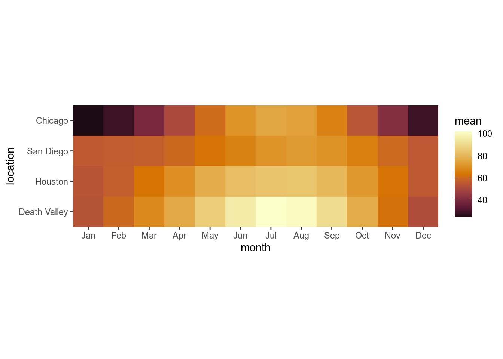
You can also use begin and end just like in the viridis scales.
Manual scales
For discrete data with a small number of categories, it’s usually best to set colors manually. This can be done with the scale functions scale_*_manual(). These functions take an argument values that specifies the color values to use.
To see how this works, let’s go back to this plot of temperatures over time for four locations.
ggplot(temperatures, aes(day_of_year, temperature, color = location)) +
geom_line(size = 1.5)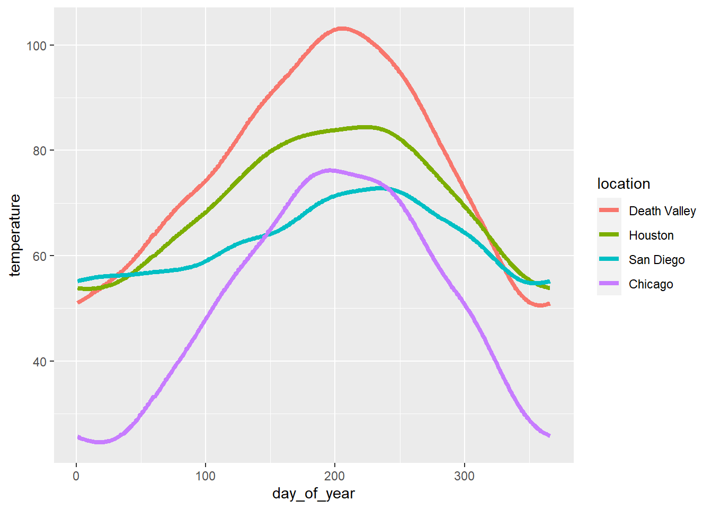
Let’s use the following four colors: "gold2", "firebrick", "blue3", "springgreen4". We can visualize this palette using the function swatchplot() from the colorspace package.
colorspace::swatchplot(c("gold2", "firebrick", "blue3", "springgreen4"))
Now apply this color palette to the temperatures plot, by using the manual color scale. Hint: use the values argument to provide the colors to the manual scale.
ggplot(temperatures, aes(day_of_year, temperature, color = location)) +
geom_line(size = 1.5) +
___# solution
ggplot(temperatures, aes(day_of_year, temperature, color = location)) +
geom_line(size = 1.5) +
scale_color_manual(
values = c("gold2", "firebrick", "blue3", "springgreen4")
)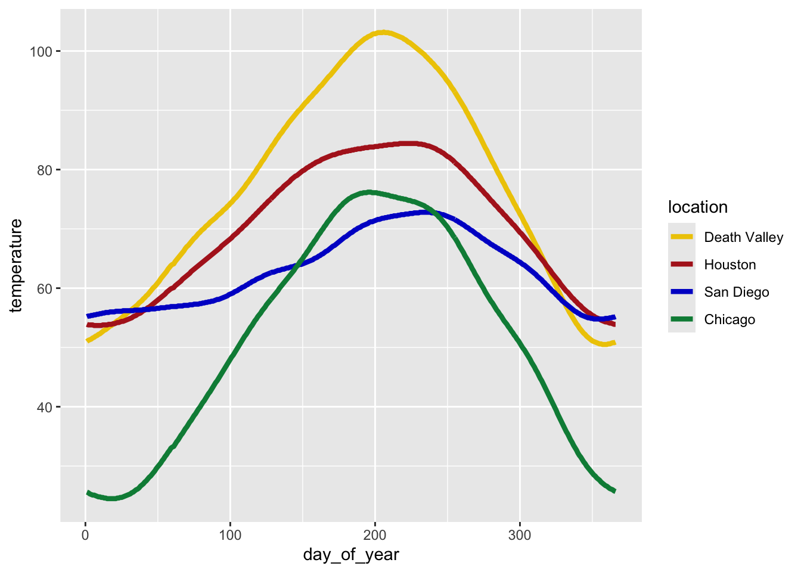
One problem with this approach is that we can’t easily control which data value gets assigned to which color. What if we wanted San Diego to be shown in green and Chicago in blue? The simplest way to resolve this issue is to use a named vector. A named vector in R is a vector where each value has a name. Named vectors are created by writing c(name1 = value1, name2 = value2, ...). See the following example.
# regular vector
c("cat", "mouse", "house")[1] "cat" "mouse" "house"# named vector
c(A = "cat", B = "mouse", C = "house") A B C
"cat" "mouse" "house" The names in the second example are A, B, and C. Notice that the names are not in quotes. However, if you need a name containing a space (such as Death Valley), you need to enclose the name in backticks. Thus, our named vector of colors could be written like so:
c(`Death Valley` = "gold2", Houston = "firebrick", Chicago = "blue3", `San Diego` = "springgreen4") Death Valley Houston Chicago San Diego
"gold2" "firebrick" "blue3" "springgreen4" Now try to use this color vector in the figure showing temperatures over time.
# build all the code for this exercise
# solution
ggplot(temperatures, aes(day_of_year, temperature, color = location)) +
geom_line(size = 1.5) +
scale_color_manual(
values = c(
`Death Valley` = "gold2",
Houston = "firebrick",
Chicago = "blue3",
`San Diego` = "springgreen4"
)
)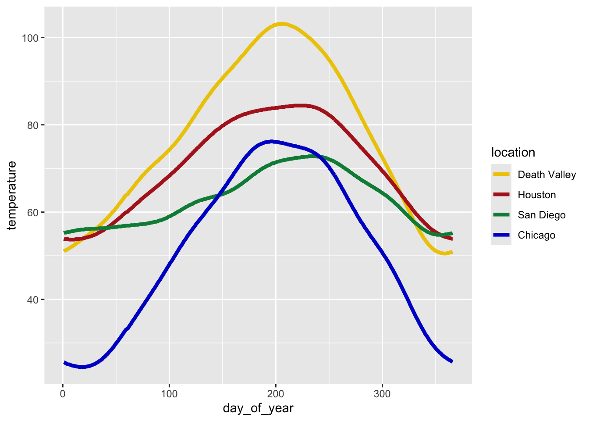
Try some other colors also. For example, you could use the Okabe-Ito colors:
# Okabe-Ito colors
colorspace::swatchplot(c("#E69F00", "#56B4E9", "#009E73", "#F0E442", "#0072B2", "#D55E00", "#CC79A7", "#000000"))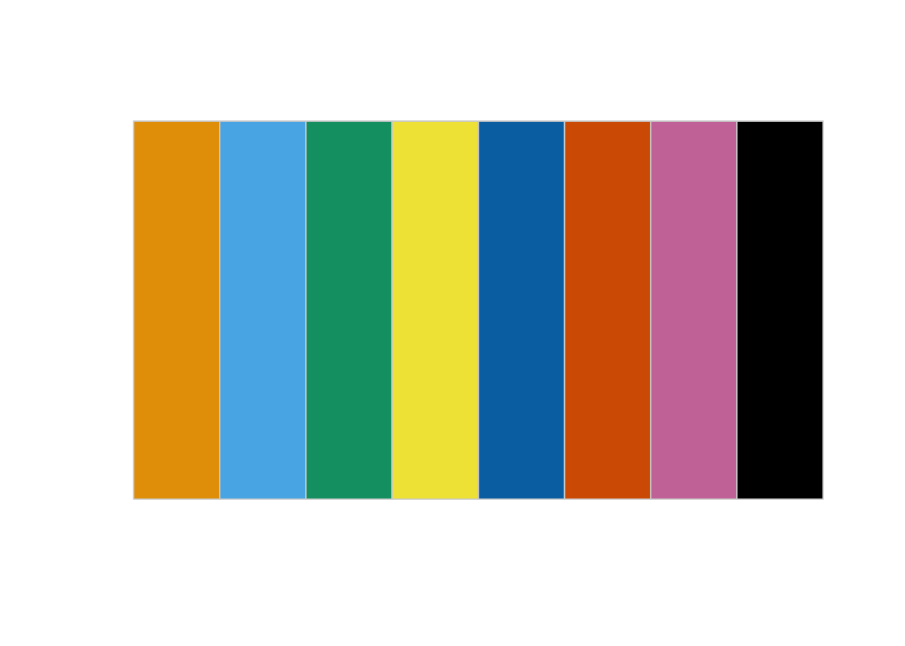
Alternatively, you can find a list of all named colors here. You can also run the command colors() in your R console to get a list of all available color names.
Hint: It’s a good idea to never use the colors "red", "green", "blue", "cyan", "magenta", "yellow". They are extreme points in the RGB color space and tend to look unnatural and too crazy. Try this by making a swatch plot of these colors, and compare for example to the color scale containing the colors "firebrick", "springgreen4", "blue3", "turquoise3", "darkorchid2", "gold2". Do you see the difference?
# build all the code for this exerciseSolution to the challenge to make the summary table of mean temperature by month:
# paste this below the "temperatures" code-chunk
temps_months <- read_csv("https://wilkelab.org/SDS375/datasets/tempnormals.csv") %>%
group_by(location, month_name) %>%
summarize(mean = mean(temperature)) %>%
mutate(
month = factor(
month_name,
levels = c("Jan", "Feb", "Mar", "Apr", "May", "Jun", "Jul", "Aug", "Sep", "Oct", "Nov", "Dec")
),
location = factor(
location, levels = c("Death Valley", "Houston", "San Diego", "Chicago")
)
) %>%
select(-month_name)